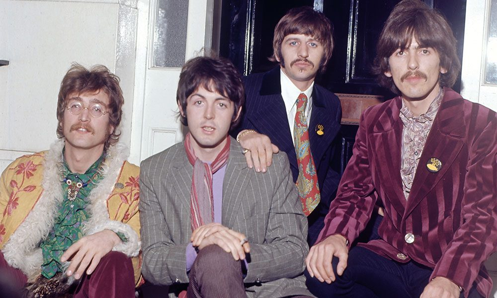

About The Beatles
The Beatles were an English rock band formed in Liverpool in 1960. The group consisted of John Lennon, Paul McCartney, George Harrison, and Ringo Starr. They became one of the most influential and commercially successful bands in music history, helping shape modern rock and popular music.
Beatlemania
By 1963, The Beatles had become an international sensation. Their energetic performances, memorable songwriting, and unique personalities inspired millions of fans around the world. The excitement surrounding the band became known as Beatlemania.
Musical Innovation
Throughout the 1960s, The Beatles continually experimented with recording techniques, songwriting, and musical styles. Albums such as Rubber Soul, Revolver, Sgt. Pepper's Lonely Hearts Club Band, The Beatles (White Album), Abbey Road, and Let It Be remain among the most influential albums ever recorded.
Band Members
John Lennon – Rhythm guitar, vocals, songwriter
Paul McCartney – Bass guitar, vocals, songwriter
George Harrison – Lead guitar, vocals
Ringo Starr – Drums, vocals
Legacy
Although The Beatles officially disbanded in 1970, their music continues to inspire new generations of listeners. Songs such as Hey Jude, Yesterday, Let It Be, Come Together, Something, and Here Comes the Sun remain among the most celebrated songs in popular music.
Explore More
Visit the Albums page to explore every Beatles studio album and listen on Spotify, or browse the Blog page for interesting stories, historical facts, and updates about the band's remarkable career.